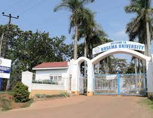
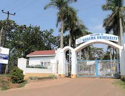

Bugema University Main Campus
Bugema University Main Campus – see the list of courses offered at the main campus…
Kampala Campus makes it possible to fit education into your schedule, and nurtures your achievement with incredible support.
From your first visit through graduation and beyond, your instructors and a team of advisors will provide the guidance you need. And whether you attend class on campus or online, you can enjoy one of the most interactive,
intuitive learning experiences available at our campus with professional instructors.

 

.jpeg)
Bugema university kampala campus is a building in Kampala. Bugema university kampala campus is situated nearby to Mulago view students hostel, and close to Sun rise students hostel.
I am Geoffrey Keino the director Bugema University Mbale Campus, welcoming in-service and regular students both physical and Online. Bugema University Mbale Campus is located in the heart of Mbale city, on plot 6 Maluku drive, established way back in august/2008. Our services are on high demand both nationally and internationally with diverse cultures ranging from over 24 nations worldwide. With the introduction of blended learning, our spirited, skilled and committed staff and faculty are able to support both in-service as physical students and the others as online students. our staff and faculty are committed, very welcoming, hardworking and competent with a highly spirited teamwork, explaining the reason as to why our students are observed and given priority in the job market.
West Nile Youths gather for a conference at Bugema University ARUA campus. About 250 youths attended. Dr. Emwaku, the director Bugema university welcomed the guests and the youths. The Guest of honor was the Regional Khadi, West Nile, Aluma Habib. Invited were the DPC ARUA, RCC ARUA, Bishop Sabino Ochan Odoki the patron of the Forum, Chief facilitator Swaib Dragule a senior lecturer ICT MUK & IUIU, the District Pastor, SDA church. The conference was organized to promote Bugema University and to sensitize the youths on self development.